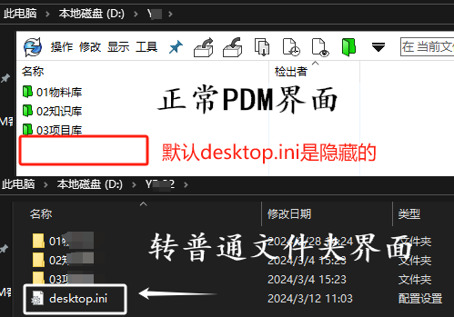

PDM故障排查方法
这种方法可用于解决以下问题（但不限于）：
重复的文件名消息
保存速度慢
打开缓慢
程序集参考问题
在文件上写入问题
了解并记录重复问题的步骤过程。如果问题无法按需重现，再说。
1断开PDM连接
断开本地视图于服务器的连接，要暂时将 SOLIDWORKS PDM 排除在外，我们必须执行两项单独的操作：
- 保存并检入所有文件，将本地视图普通文件夹。
- 退出 PDM 客户端并关闭 PDM 插件和 SOLIDWORKS 来断开与服务器的连接。
通过打开命令提示符。键入cd，进入PDM库视图的路径。
1 | D: |
按 Enter 键，您应该已通过命令提示符输入库视图。键入以下行，然后每次输入：
1 | attrib -r -h desktop.ini |
现在，PDM本地视图位置里会有一个“desktop.ini-old”的文件，这个文件和PDM本地视图的配置有关。（如果您的库视图文件夹仍具有 PDM 图标，请重新启动计算机）
2禁用插件和客户端
1、打开 SOLIDWORKS > 工具>插件>取消选中 SOLIDWORKS PDM 框>然后单击确定。
2、退出 PDM 客户端，右键单击系统托盘中的 PDM 图标，然后选择退出。

3复现操作
现在，您都已与 PDM 断开连接。执行故障排除测试。
在本文档中的示例中，打开在 SOLIDWORKS 中打开需要很长时间的文件。如果问题正常，我们可以确认 PDM 不是一个因素。
检查导入的主体、对网络驱动器的外部引用、查找复杂部件等，如果执行步骤后问题消失，我们可以有初步判断PDM连接问题
4恢复本地视图
在原PDM本地视图文件夹中找到desktop.ini-old 文件。【右键-重命名】为 desktop.ini。
再次单击desktop.ini 文件【右键-属性】，在“常规”下，启用“只读”和“隐藏”，单击“确定”。
现在的PDM本地视图就是正常了，您将看到它已恢复成PDM的图标和界面。